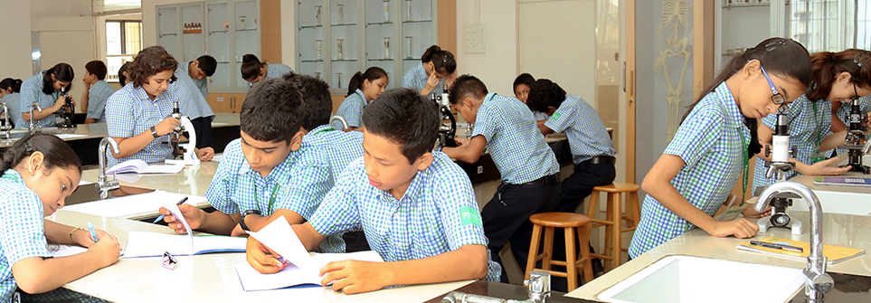

Education
The Education and Sports for All (ESA) initiative was launched in 2010 with the objective of providing access to quality education in India. Through a partnership with several NGOs, Reliance Foundation and Mumbai Indians have positively impacted the lives of 200,000 of underprivileged children during the last few years.Mrs. Nita Ambani spearheads the ESA initiative. The Mumbai Indians team is actively engaged in the initiative and has exhibited their ardent support for the cause. The ESA programme supports various initiatives that work with underprivileged children, promote girl-child education and impart life skills to the differently abled. In 2019, the programme supported 15 partner NGOs: Aarambh, Aseema Charitable Trust, Krida Vikas Sanstha , Meljol, Milaan Be The Change, Mumbai Mobile Creches, One Billion Literates Foundation, Sakhi For Girls Education, Ummeed Child Development Centre, Yuwa India Trust, OSCAR, Bridges of Sports Foundation, Cansupport, Pi Jam Foundation, The Community Library Project.
Our Location